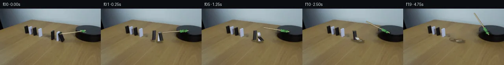

![首帧]()

Round 00
2026-11-06T08:10:14.027994+00:00像素候选变化代码 +298/−0inspection 更新
pixels a23d4ecf942685c7 · code 7e8b404f637c9ce7
查看本轮 generate.py 真实 diff
--- previous/generate.py +++ current/generate.py @@ -0,0 +1,298 @@ +"""PixelWorld case_0051 generator. + +Static locked-off tabletop: a wooden stick taped to a rotating black platform +sweeps clockwise and topples a 3-domino black-white-black row; the cascade ends +at the gap before a second, untouched row. + +Method (see METHOD.md for details): + * frame 00 is the untouched first_frame.png (exact pixels); + * a static background plate is made by cv2.inpaint-ing the stick, tape and + the three right-row dominoes (+shadows) out of frame 00, with light grain; + * frames 01-19 composite analytically projected dominoes (thin boxes tipping + about their leading base edge), soft shadows and the rotating wood stick + with crumpled green tape, supersampled 3x then LANCZOS-downscaled; + * saved through artifact_io (256x144x3 uint8 -> 0xRRGGBB u32 tensor). +""" +from pathlib import Path +import numpy as np +import cv2 +from PIL import Image +import artifact_io + +CASE = Path(__file__).parent +SS = 3 # supersampling factor +W0, H0 = 256, 144 + +# ---------------------------------------------------------------- geometry +# screen vectors (final-resolution px per "world" unit where vertical = 1) +FALL = np.array([-0.435, -0.130]) # +fall direction (D1 -> D2 -> D3), foreshortened +UP = np.array([0.0, -1.0]) +WV = np.array([0.97, -0.06]) # per 1 width unit along the hinge edge (screen) + +# dominoes: hinge edge (trailing/bottom visible edge midpoint), sizes, colours +DOM = [ + dict(h=(150.3, 82.0), W=8.6, H=22.8, T=3.4, kind='B'), # D1 (already leaning) + dict(h=(144.2, 83.2), W=8.0, H=23.4, T=3.4, kind='W'), # D2 + dict(h=(130.2, 79.6), W=8.6, H=23.4, T=3.4, kind='B'), # D3 +] +# lean angles (deg) per frame f=0..19 +ANG = [ + [26, 32, 39, 47, 56, 65, 73, 81, 87, 90, 90, 90, 90, 90, 90, 90, 90, 90, 90, 90], + [ 0, 0, 0, 6, 14, 23, 33, 44, 55, 63, 71, 79, 86, 90, 90, 90, 90, 90, 90, 90], + [ 0, 0, 0, 0, 0, 0, 0, 0, 5, 12, 21, 32, 44, 56, 67, 77, 85, 90, 90, 90], +] + +PIVOT = np.array([210.5, 57.0]) +SLEN = 54.0 +def stick_angle(f): + return np.deg2rad(172.9 + 3.316 * f) + +# ---------------------------------------------------------------- colours +BLACK_FACE = np.array([24., 24., 22.]) +BLACK_EDGE = np.array([58., 60., 62.]) +BLACK_TOP = np.array([96., 96., 92.]) +WHITE_FACE = np.array([186., 192., 210.]) +WHITE_HI = np.array([214., 219., 234.]) +WHITE_SH = np.array([138., 146., 168.]) +WHITE_TOP = np.array([176., 184., 200.]) +WOOD = np.array([188., 174., 138.]) +WOOD_HI = np.array([218., 205., 166.]) +WOOD_LO = np.array([146., 130., 96.]) + +rng_tex = np.random.default_rng(7) +GRAIN = rng_tex.normal(0, 1.6, (96, 40)).astype(np.float32) +GRAIN = cv2.GaussianBlur(GRAIN, (0, 0), 0.5) + +# ---------------------------------------------------------------- background plate +def build_plate(src): + a = src.copy() + mask = np.zeros(a.shape[:2], np.uint8) + cv2.rectangle(mask, (124, 54), (149, 86), 255, -1) + cv2.rectangle(mask, (140, 55), (163, 89), 255, -1) + cv2.fillPoly(mask, [np.array([(144, 57), (162, 56), (172, 86), + (152, 90), (146, 79)], np.int32)], 255) + cv2.line(mask, (154, 64), (213, 58), 255, 6) + cv2.fillPoly(mask, [np.array([(152, 59), (160, 59), (160, 69), (152, 69)], np.int32)], 255) + cv2.rectangle(mask, (198, 50), (224, 63), 255, -1) + roi = np.zeros_like(mask); cv2.rectangle(roi, (120, 60), (180, 96), 255, -1) + dark = (((a[:, :, 0] < 118) & (a[:, :, 1] < 118) & (a[:, :, 2] < 120)) * 255).astype(np.uint8) + mask = cv2.bitwise_or(mask, cv2.bitwise_and(dark, roi)) + mask = cv2.dilate(mask, np.ones((3, 3), np.uint8), 1) + plate = cv2.inpaint(a, mask, 6, cv2.INPAINT_TELEA) + gray = cv2.cvtColor(plate, cv2.COLOR_RGB2GRAY) + med = cv2.medianBlur(gray, 41) + stain = ((gray < med - 10) * 255).astype(np.uint8) + zone = np.zeros_like(mask); cv2.rectangle(zone, (120, 62), (180, 96), 255, -1) + stain = cv2.dilate(cv2.bitwise_and(stain, zone), np.ones((5, 5), np.uint8), 1) + plate = cv2.inpaint(plate, stain, 6, cv2.INPAINT_TELEA) … diff truncated; 211 more lines …